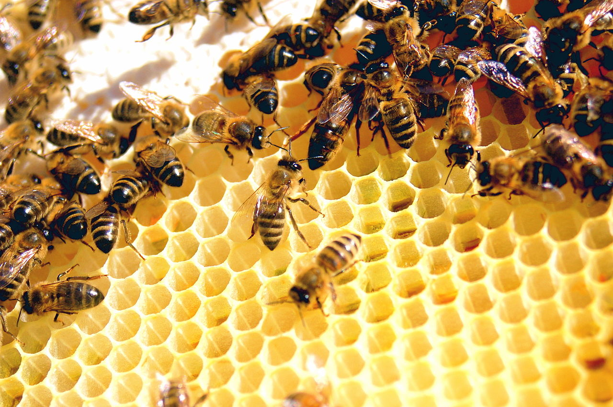

Honeybees belong to the order Hymenoptera and to one of the Apis species. (For a complete discussion of honeybees, see the article hymenopteran.) Honeybees are social insects noted for providing their nests with large amounts of honey. A colony of honeybees is a highly complex cluster of individuals that functions virtually as a single organism. It usually consists of the queen bee, a fertilized female capable of laying a thousand or more eggs per day; from a few to 60,000 sexually undeveloped females, the worker bees; and from none to 1,000 male bees, or drones. The female of most species of bees is equipped with a venomous sting.
Honeybees collect nectar, a sugary solution, from nectaries in blossoms and sometimes from nectaries on the leaves or stems of plants. Nectar may consist of 50 to 80 percent water, but when the bees convert it into honey it will contain only about 16 to 18 percent water. Sometimes they collect honeydew, an exudate from certain plant-sucking insects, and store it as honey. The primary carbohydrate diet of bees is honey. They also collect pollen, the dustlike male element, from the anthers of flowers. Pollen provides the essential proteins necessary for the rearing of young bees. In the act of collecting nectar and pollen to provision the nest, the bees pollinate the flowers they visit. Honeybees also collect propolis, a resinous material from buds of trees, for sealing cracks in the hive or for covering foreign objects in the hive that they cannot remove. They collect water to air-condition the hive and to dilute the honey when they consume it. A populous colony in a desirable location may, in a year’s time, collect and carry into the hive as much as 1,000 pounds (450 kilograms) of nectar, water, and pollen.